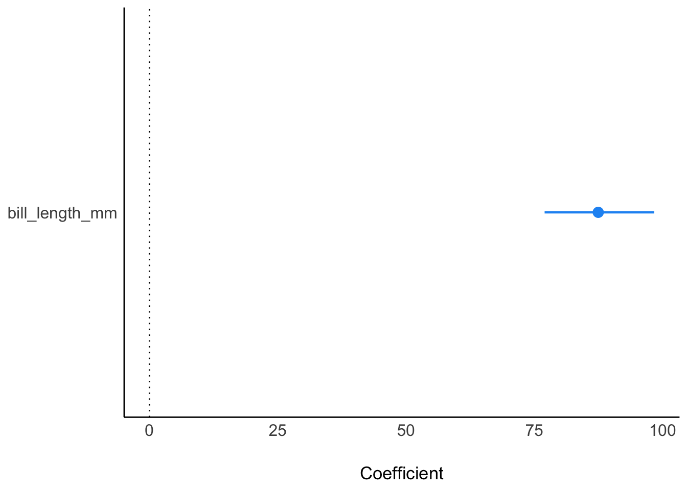

library(tidyverse)
library(easystats)
library(rstanarm)
data("penguins", package = "palmerpenguins")penguins-stan-01a
bayes
regression
string
qm2
Aufgabe
Wir untersuchen Einflussfaktoren bzw. Prädiktoren auf das Körpergewicht von Pinguinen. In dieser Aufgabe untersuchen wir in dem Zusammenhang den Zusammenhang von Schnabellänge (als UV) und Körpergewicht (als AV).
Aufgabe:
Wie groß ist der statistische Einfluss der UV auf die AV?
- Geben Sie den Punktschätzer des Effekts an!
- Wie viele Parameter hat das Modell?
- Geben Sie die Breite eines 90%-HDI an (zum Effekt)!
- Wie groß ist die Wahrscheinlichkeit, dass der Effekt vorhanden ist (also größer als Null ist), die “Effektwahrscheinlichkeit”?
Nutzen Sie die folgende Analyse als Grundlage Ihrer Antworten.
Setup:
Es wird in dieser Aufgabe vorausgesetzt, dass Sie den Datensatz selbständig importieren können. Tipp: Kurzes Googeln hilft ggf., den Datensatz zu finden.
Alternativ könnten Sie den Datensatz als CSV-Datei importieren:
d_path <- "https://vincentarelbundock.github.io/Rdatasets/csv/palmerpenguins/penguins.csv"
penguins <- data_read(d_path) # oder z.B. mit read_csv Ein Blick in die Daten zur Kontrolle, ob das Importieren richtig funktioniert hat:
glimpse(penguins)Rows: 344
Columns: 8
$ species <fct> Adelie, Adelie, Adelie, Adelie, Adelie, Adelie, Adel…
$ island <fct> Torgersen, Torgersen, Torgersen, Torgersen, Torgerse…
$ bill_length_mm <dbl> 39.1, 39.5, 40.3, NA, 36.7, 39.3, 38.9, 39.2, 34.1, …
$ bill_depth_mm <dbl> 18.7, 17.4, 18.0, NA, 19.3, 20.6, 17.8, 19.6, 18.1, …
$ flipper_length_mm <int> 181, 186, 195, NA, 193, 190, 181, 195, 193, 190, 186…
$ body_mass_g <int> 3750, 3800, 3250, NA, 3450, 3650, 3625, 4675, 3475, …
$ sex <fct> male, female, female, NA, female, male, female, male…
$ year <int> 2007, 2007, 2007, 2007, 2007, 2007, 2007, 2007, 2007…m1 <- stan_glm(body_mass_g ~ bill_length_mm, # Regressionsgleichung
data = penguins, # Daten
seed = 42, # Reproduzierbarkeit
refresh = 0) # nicht so viel Outputm1_params <- parameters(m1, ci_method = "hdi", ci = .9)
m1_params| Parameter | Median | CI | CI_low | CI_high | pd | Rhat | ESS | Prior_Distribution | Prior_Location | Prior_Scale |
|---|---|---|---|---|---|---|---|---|---|---|
| (Intercept) | 359.9393 | 0.9 | -112.36003 | 834.8034 | 0.89575 | 1.000485 | 4117.553 | normal | 4201.754 | 2004.8863 |
| bill_length_mm | 87.4472 | 0.9 | 76.99955 | 98.3694 | 1.00000 | 1.000491 | 4123.761 | normal | 0.000 | 367.2233 |
Lösung
Punktschätzer
Der Punktschätzer ist in der Spalte Median in der Tabelle parameters zu finden. Sein Wert ist:
[1] 87.4472m1_params |> plot()
Anzahl Parameter
Das Modell hat 3 Parameter:
- \(\beta_0\) (oder \(\alpha\))
- \(\beta_01\)
- \(\sigma\)
Breite des Intervalls
Dazu liest man die Intervallgrenzen (90% CI) in der richtigen Zeile ab (Tabelle parameters):
[1] 21.36985Einheit: mm
Effektwahrscheinlichkeit
Man kann diesen Wert aus der Tabelle oben (Ausgabe von parameters()) einfach in der Spalte pd ablesen. pd steht für probability of direction, s. Details hier.
Oder so, ist auch einfach:
pd_m1 <- p_direction(m1) # aus Paket easystats
pd_m1| Parameter | pd | Effects | Component |
|---|---|---|---|
| (Intercept) | 0.89575 | fixed | conditional |
| bill_length_mm | 1.00000 | fixed | conditional |
Und plotten ist meist hilfreich: plot(pd_m1).
Man kann sich auch ein “Dashboard” mit allen Ergebnissen des Modells ausgeben lassen:
model_dashboard(m1)